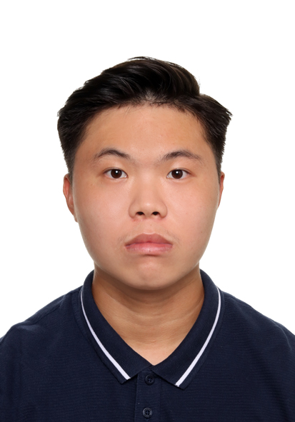

LAI HAN JUN

Contact Me
Skills Summary
- Communication: Strong in presentation and interaction with internal and external stakeholders, by weekly progress presentation and chairing of coordination meetings.
- Problem Solving: Experienced in solving technical and non-technical issues, independently and with internal and external parties, to find appropriate and effective solutions.
- Project management: Good at planning and organization of project work to achieve project goals within the given constraints. Experienced in progress tracking and reporting.
- Team Player: Enjoys knowledge sharing, motivated in aiding the development of others, and encourages good work ethics.
EDUCATION
Nanyang Technological University [Aug 2018 - May 2022]
School of Civil and Environmental Engineering
Bachelor of Engineering (Honours), Civil Engineering
- Honours (Highest Distinction)
- GPA 4.94/5.00
WORKING EXPERIENCE
KTC Civil Engineering & Construction Pte Ltd [Jul 2022 - PRESENT]
Job Title: Project Engineer
- Lead engineer for the overall water pipe diversion works
- Lead engineer of 12m-15.3m transition buried drain construction works
- Monitor and improve water pipe laying progress to ensure works are on track based on project schedule
- Collaborate with consultant on solving technical issues
- Spearheaded coordination meetings with interfacing contractors on site
- Delegate and manage subcontractor’s work fronts, manpower and material resources
- Collaborated with senior management on technical submission for project tendering works
SKILLS
Language : English, Chinese, Malay (Spoken & Written)
Digital Skills: Plaxis 2D, Primavera P6, Excel VBA, Microsoft 365
ACHIEVEMENTS
- Dean’s List (With Academic Excellence Award) for AY2018-19/ AY2019-20/AY2020-21
- Singapore Engineering Alumni (U.M.) Gold Medalist for 2021-2022